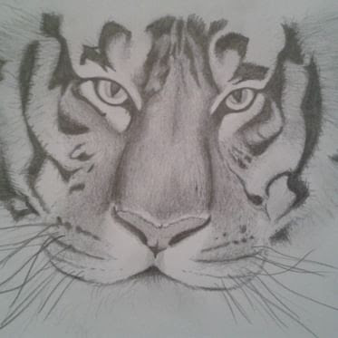
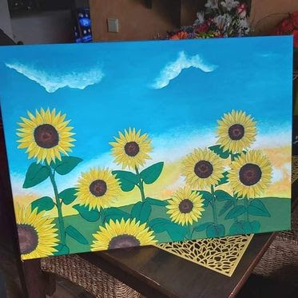
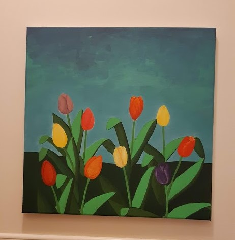
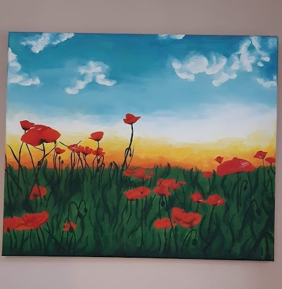
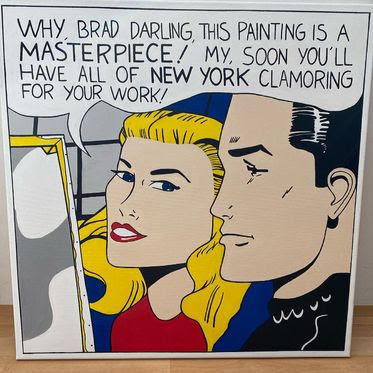
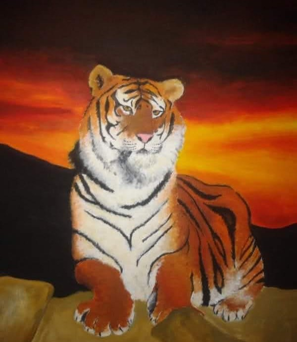
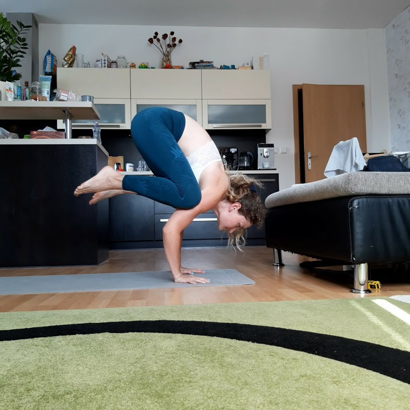
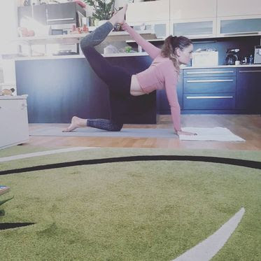

Kdo jsem:

Obyčejná holka, co chce pořád změnit svět. Žiju ve světě snů a fantazie, ale v reálu už je to se mnou těžší. Líbí se mi umění - tak trochu maluju, tak trochu píšu knihu. Cvičím jógu, posiluju a začínám běhat :) Občas až moc bojuju za pravdu a nesnáším nespravedlnost. Miluju jazz a barový piano. Je mi 29 a mám dvě malé děti.
Teď se učím tvořit web a programovat.A proč? Protože abyste mohli žít ve snu, musíte kousek těch snů dostat do reality a něco pro to udělat. Taky se mi líbí, že je to takové kouzlení prstama - udělám na klávesnici "čáry máry", zadám kouzelné kódy a buď vznikne nebo nevznikne něco krásného.
Moje nejhorší obava? - čím dál tím víc si začínám uvědomovat, že toho vím strašně málo a myslím na Sokratovo: "Vím, že nic nevím". A je toho tolik, co bych chtěla ještě vědět a znát. Nechci žít život jako "ovce" (práce - tv - práce - tv,...), chci ho opravdu žít. Chci se učit novým věcem a plnit si sny. Tak jsem tu, tady stojím, nebo spíš sedím za notebookem, a snažím se splnit si něco, co pro někoho může znamenat strašně málo, ale pro mě strašně moc.
Maluju si
Od malička si pořád něco maluju, čmárám a tvořím. Ať už jde o něco důležitějšího jako obraz na plátně či jen nadpis v sešitě nebo tvář nějaké ženy v časopise. Posledních pár let jsem se věnovala hlavně dětem a na tvoření nezbylo tolik času, přesto jsem ale pár obrazů namalovala. Níže můžete vidět pár mých prací. Některé jsou z dob "kdysi dávno" a jiné zas z období posledních dvou let.
     Jóga a já
K józe jsem přišla náhodou asi před 7 lety když jsem se přistěhovala do Prahy. Pár let jsme se jen tak oťukávaly a ikdyž se mi líbila, nějak moc jsem ji nevěnovala pozornost. Na plno jsem se do ní pustila asi před 3 lety. Teď je mojí součástí a život bez ní, si nedokážu představit :).
◄ Pozice vrány nebo jak říkám já: "první fáze létání"
Pozice polovičního luku z kleku ►